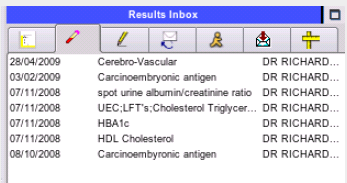
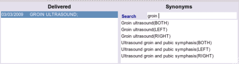
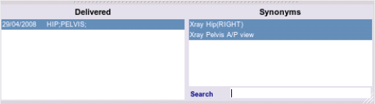
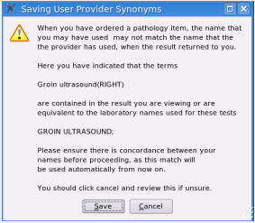

User Synonyms
After filing your incoming HL7 result, you want to end up with something intelligable in your results list, for example as mentioned above `carcinoembryoic antigen', not `E498', i.e. it should look something like this, and ideally matched to exactly what you ordered:

To obtain the desired result, commercial medical software installs this translation layer automatically for you with a varying degree of sucess. In the future you may be able to import a list of these from various providers, however at the moment you will have to enter these by hand. EasyGP gives you control over what you see displayed, but with that goes the responsibility of entering new data accurately.
Linking a delivered term to the request you ordered.
In a newly built EasyGP database, though thousands of request synonyms exist for your ordering pleasure, there is no linkage between a given provider's delivered terms and what you actually ordered from them, as these delivered terms (numbered in their thousands) vary from provider to provider and may incredibly even contain typo's depending upon who in the lab entered them in!.
So, tedious as it may seem, the program will have to `learn', what means what. This is intially a slow process, but it will quickly become exponential as common things happen commonly, and the program will be able to automatically match most of your results. If it cannot, you will be prompted to supply a name.
Adding a user synonym
Click on the Delivered list to select the term you wish to match
Type in the seach text box to bring up search list of likely synonyms
From the search list, select the synonym you want, or add the synonym as a new term

If you need to equate one or more terms to a single delivered request repeat the process.
Select one or more synonyms to match the delivered term:

File your result and you will then see the following dialog appear:
****FIXME- BUG - MAKE LABELLING APPROPRIATE EG RADIOLOGY ITEM/PATHOLOGY ITEM FIXME*****

Click OK to accept your choice, or cancel to abort.